Artificial Intelligence (AI) • Blockchain • Drone • Edge Computing • Internet of Things (IoT) • Sensor
Selamat Datang di
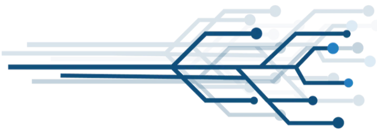
Selamat datang di forum diskusi yang mempertemukan inovasi dan riset mutakhir di bidang Artificial Intelligence (AI), blockchain, drone, edge computing, Internet of Things, dan sensor
Our MoU
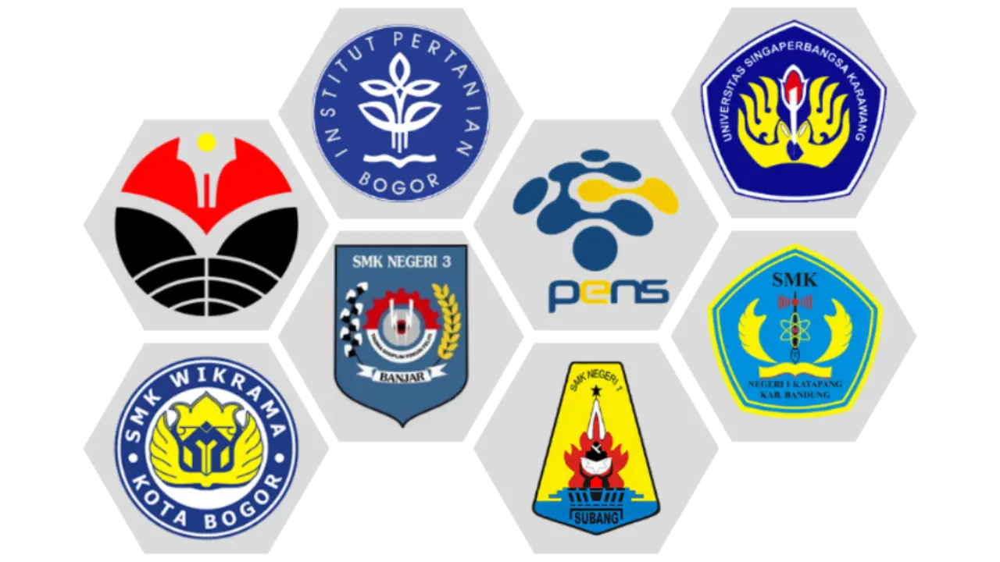
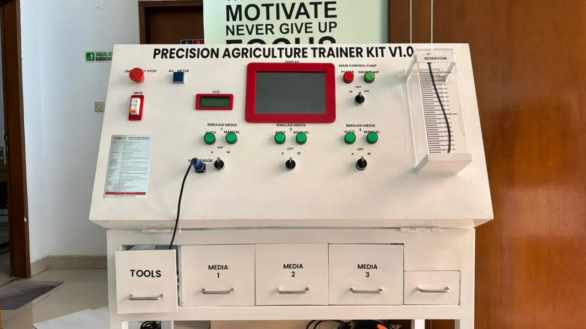
Precision Agriculture Trainer Kit
Sebuah Trainer Kit untuk praktikum Fakultas Pertanian, dengan fitur penyiraman otomatis serta sistem pengecekan unsur basa tanah.
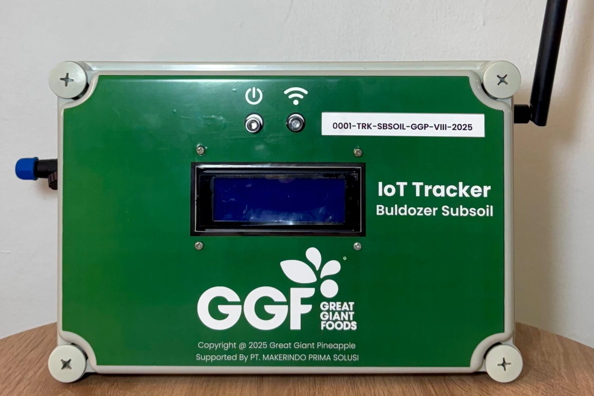
Bulldozer Subsoil
Alat berbasis Internet of Things, yang digunakan untuk mendeteksi progres pekerjaan & kedalaman tanah galian bulldozer dengan sensor ultrasonic dan GPS.
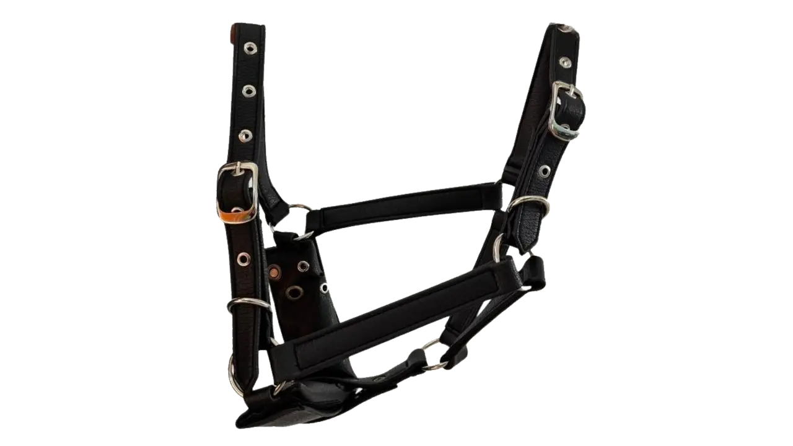
Smart Halter
Halter kuda berbasis Internet of Things untuk memantau kesehatan kuda secara real time, dengan versi lainnya yang memiliki GPS untuk pemantauan lokasi.
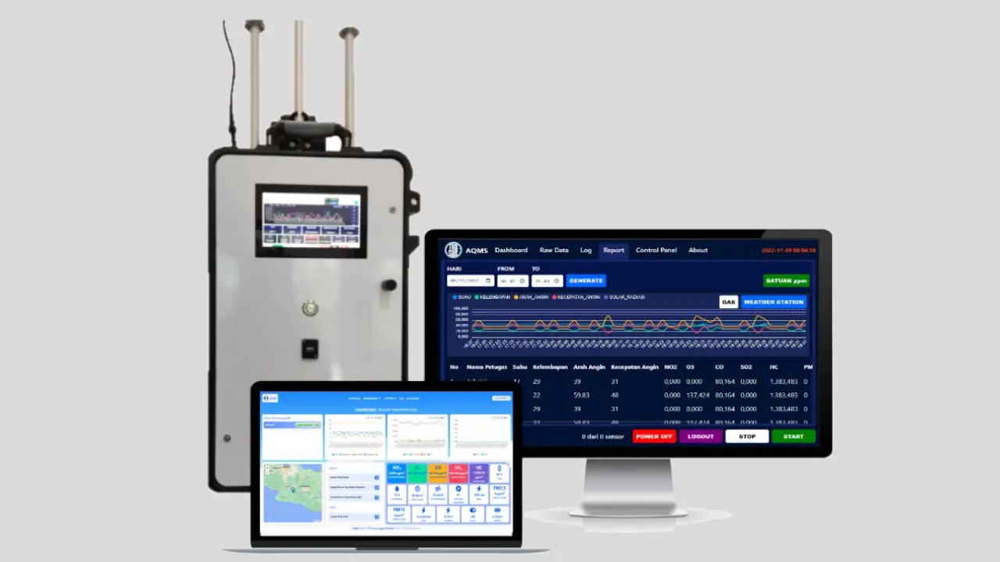
Air Quality Monitoring System
Sistem Internet of Things untuk setiap orang yang melakukan usaha atau kegiatan berkewajiban untuk memberikan informasi yang terkait dengan perlindungan dan pengelolaan lingkungan hidup secara benar, akurat, terbuka dan tepat waktu.
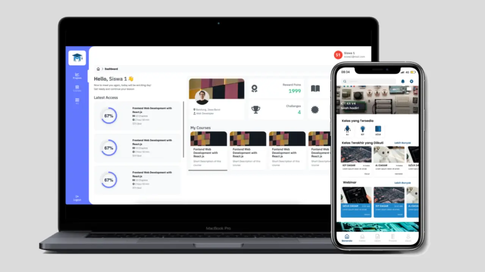
Makerindo EDU
Platform Learning Management System (LMS) inovatif yang dirancang khusus untuk pelatihan di bidang Internet of Things (IoT). Dengan antarmuka yang user-friendly dan konten yang komprehensif.
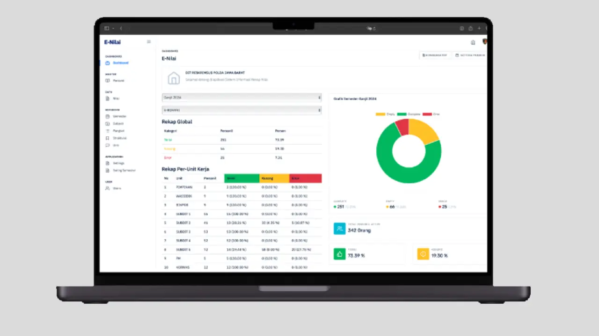
Rekap Nilai DITRESKRIMSUS
Merupakan aplikasi yang diterapkan pada lingkungan kerja Ditreskrimsus Polda Jabar, dirancang untuk mengelola dan merekap data penilaian personel secara efisien dan akurat.
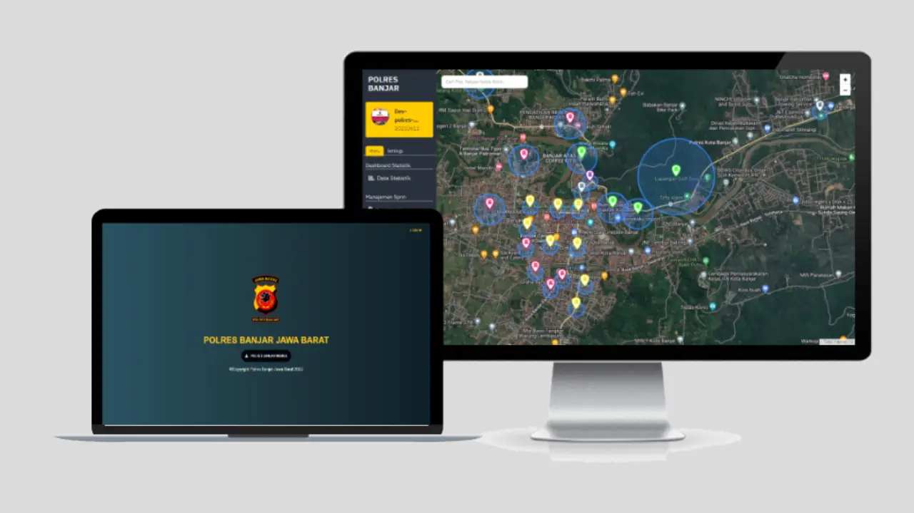
e-Polres
Aplikasi pemantauan terpadu berbasis Sistem Informasi Geografis (SIG) yang dirancang untuk memantau personel dan anggota kepolisian di Satuan Kerja Polres Banjar.
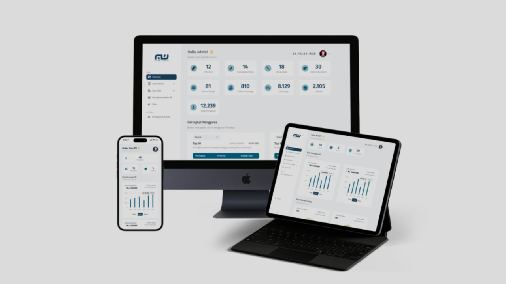
RT RW Cerdas
Aplikasi mobile dan web yang dirancang untuk mempermudah pengelolaan administrasi dan komunikasi di tingkat RT dan RW.
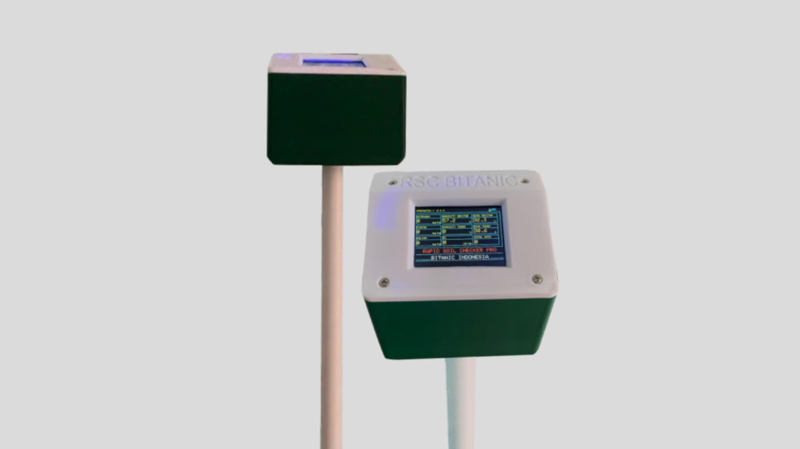
Rapid Soil Checker
adalah alat untuk mengukur kandungan unsur hara tanah (N, P, K) dan sifat fisik tanah (pH tanah, EC tanah, kelembapan tanah, dan suhu tanah) serta suhu dan kelembapan lingkungan.
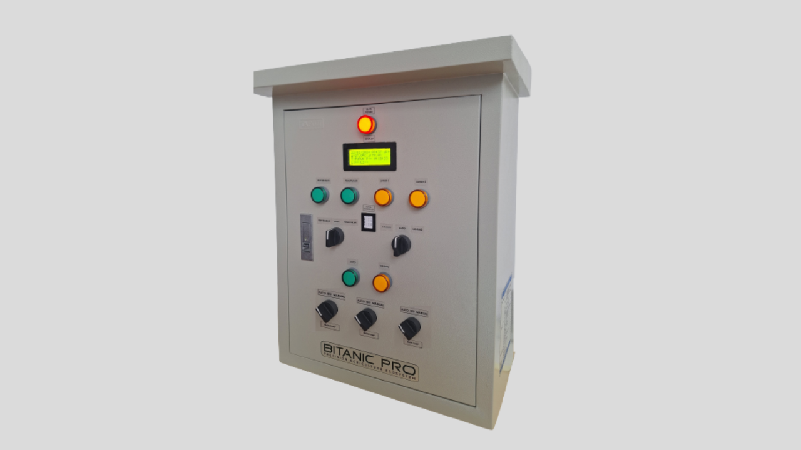
Bitanic Pro
Solusi terdepan untuk pertanian dengan lahan lebih dari 1 hektar, dengan tambahan head unit pompa terintegrasi untuk meningkatkan efisiensi dalam kontrol irigasi dan fertilisasi.